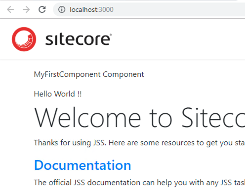

1.3. 最初のコンポーネントの追加¶
1.3.1. Scaffolding¶
コンポーネントを追加する際、Scaffolding というコマンドを利用してコンポーネント追加に必要なデータをプロジェクトに追加することができます。
jss scaffold <componentName>
プロジェクトのルートとなるエリアで、以下のコマンドを実行します。
PS C:\Users\Sitecore\sample-app> jss scaffold MyFirstComponent
> npm run scaffold -- MyFirstComponent
> sample-app@12.0.0 scaffold C:\Users\Sitecore\sample-app
> node scripts/scaffold-component.js "MyFirstComponent"
Component MyFirstComponent has been scaffolded.
Next steps:
* Define the component's data in sitecore\definitions\components\MyFirstComponent.sitecore.js
* Implement the React component in src\components\MyFirstComponent\index.js
* Add the component to a route layout (/data/routes) and test it with jss start
PS C:\Users\Sitecore\sample-app>
実行結果に表示されているように、コマンドを実行することで ２つのファイルが追加されています。
1.3.1.1. MyFirstComponent.sitecore.js¶
コンポーネントとなるファイルを確認します。対象となるファイルは sitecoredefinitionscomponentsMyFirstComponent.sitecore.js となります。コードでポイントとなるのは、フィールドの定義となります。
// eslint-disable-next-line no-unused-vars
import { CommonFieldTypes, SitecoreIcon, Manifest } from '@sitecore-jss/sitecore-jss-manifest';
/**
* Adds the MyFirstComponent component to the disconnected manifest.
* This function is invoked by convention (*.sitecore.js) when 'jss manifest' is run.
* @param {Manifest} manifest Manifest instance to add components to
*/
export default function(manifest) {
manifest.addComponent({
name: 'MyFirstComponent',
icon: SitecoreIcon.DocumentTag,
fields: [
{ name: 'heading', type: CommonFieldTypes.SingleLineText },
],
/*
If the component implementation uses <Placeholder> or withPlaceholder to expose a placeholder,
register it here, or components added to that placeholder will not be returned by Sitecore:
placeholders: ['exposed-placeholder-name']
*/
});
}
Sitecore の開発でテンプレートでデータ定義を設定することができますが、Sitecore JSS では Component で定義をします。
1.3.1.2. MyFirstComponentindex.js¶
上記のコンポーネントファイルと合わせて作成されているファイルが srccomponentsMyFirstComponentindex.js となります。実際にファイルの内容を確認すると以下のようになっています。
import React from 'react';
import { Text } from '@sitecore-jss/sitecore-jss-react';
const MyFirstComponent = (props) => (
<div>
<p>MyFirstComponent Component</p>
<Text field={props.fields.heading} />
</div>
);
export default MyFirstComponent;
実際に HTML として出力するコード、合わせて管理しているデータとして何を表示するのかが定義されています。これは Sitecore でのサブレイアウトと同様に、デザインを定義するコードとなります。
1.3.2. コンポーネントの追加¶
作成したコンポーネントを追加します。サンプルはあまりコンテンツとして揃っていないため、サンプルのトップページに作成したコンポーネントを追加します。
対象となるファイルは /data/routes/en.yml です。
placeholders:
jss-main:
- componentName: ContentBlock
fields:
heading: Welcome to Sitecore JSS
今回作成したコンポーネントを追加します。
placeholders:
jss-main:
- componentName: MyFirstComponent
fields:
heading: Hello World!
- componentName: ContentBlock
fields:
heading: Welcome to Sitecore JSS
設定を反映させたあと、 jss start を実行して、アプリを起動してください。作成したコンポーネントが表示されていることがわかります。
{kind=link}
上記のファイルを見ると以下のことがわかります。
データ形式の定義
データを表示する定義
コンテンツおよびコンポーネントの情報
これを Sitecore JSS のレイアウトエンジンが Web ページとして表示している形となります。